Hablamos con asesores y equipos de la Asamblea y con especialistas, y les preguntamos qué pasa el día en que hay que votar
«Llegan gremios presionando para que el vacío se quede»
«La información técnica llega incompleta, o desde un solo ángulo»
«No hay tiempo para leer la ley completa»
«Esto no es tema de mi comisión»
Al momento de votar, nadie tenía con qué revisar una ley
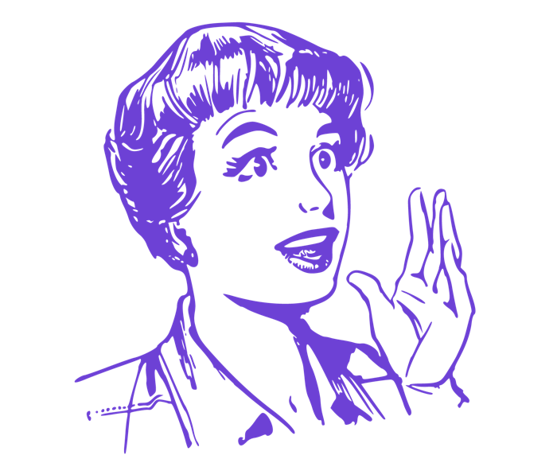
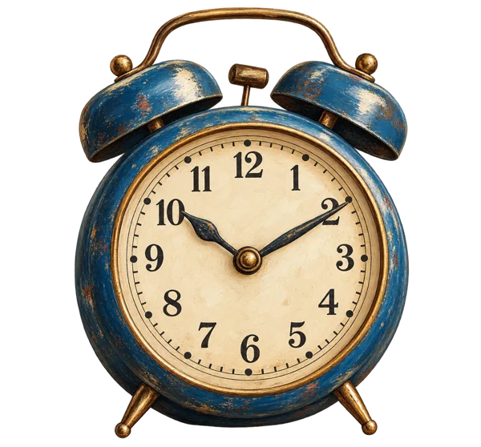
De lo que escuchamos a lo que decidimos
Tres cosas que vimos y cómo las convertimos en método
Lo que vimosLo que decidimos
El crimen organizado se trataba como tema de una sola comisión
→
Mirarlo desde la economía, lo social y lo internacional
Nadie tenía tiempo para leer una ley completa antes de votar
→
Crear herramientas cortas que se usen en el Pleno y en las comisiones
Una charla más no iba a cambiar la forma de legislar
→
Aprender haciendo, con casos y laboratorios
Nuestra metodología
Entender, aplicar y construir
26 ago28 ago2 sep4 sep22 sep
01
Entender
Seis especialistas explicaron el crimen organizado desde tres miradas
02
Aplicar
En laboratorios, los equipos evaluaron una ley ficticia con la Matriz
03
Construir
Los propios participantes escribieron su Guía de Buenas Prácticas
Cinco sesiones presenciales y virtuales · del 26 de agosto al 22 de septiembre de 2026 · aval académico de la UTPL
01 · Entender
Para enfrentar una red hay que mirarla desde tres lados
01 · Entender · las voces del programa
El crimen funciona como una empresa
Sesión inaugural · Asamblea Nacional del Ecuador · 26 de agosto de 2026
01 · Entender · las voces del programa
El dinero necesita una puerta legal
Sesiones del 26 y del 28 de agosto de 2026
01 · Entender · las voces del programa
Atacar las condiciones y seguir el dinero
Sesiones del 28 de agosto y del 2 y 4 de septiembre de 2026
01 · Entender · la mirada social
¿Quién llega primero a un adolescente de quince años: la escuela, el empleo formal o la economía ilícita?
Lo decisivo es qué mercados ilícitos hay en el territorio y qué alternativas legítimas le faltan a la gente
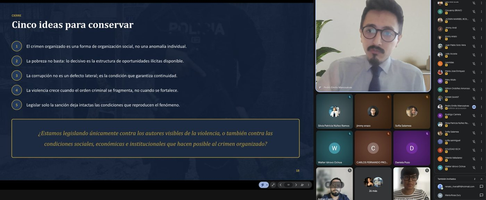
Lo que la organización ofrece
Ingreso rápido y previsible
Protección frente a otros
Identidad y reconocimiento
Pertenencia y jerarquía
Estatus en su entorno
Son bienes sociales y por eso ninguna política que ofrezca solo dinero los sustituye
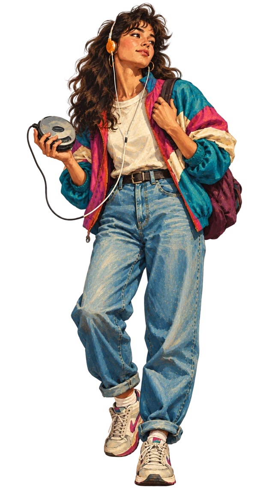
Pedro E. Manosalvas · «El origen del crimen organizado: una perspectiva social» · sesión virtual del 28 de agosto de 2026
Así se vio en la práctica
Cinco sesiones y seis especialistas con una Asamblea sentada a aprender
60
personas certificadas: 32 mujeres y 28 hombres
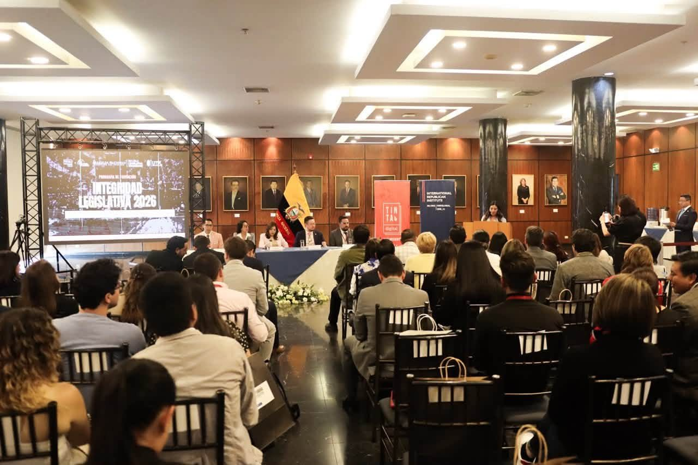
Sesión inaugural · Asamblea NacionalLa mesa de la inauguración · 26 de agosto
Aliados: IRI · Escuela Legislativa y Coordinación de Participación Ciudadana de la Asamblea Nacional · UTPL
Así se vivió
Del salón de la Asamblea a la Guía en sus manos
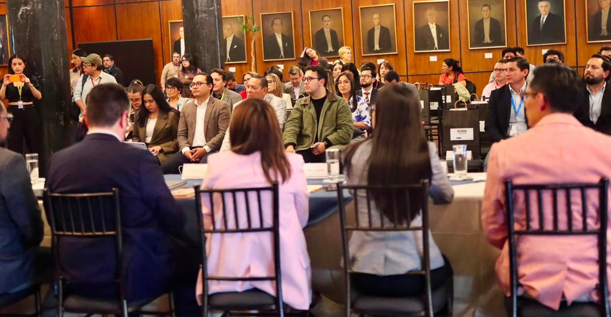
Asesores y asambleístas · sesión presencial
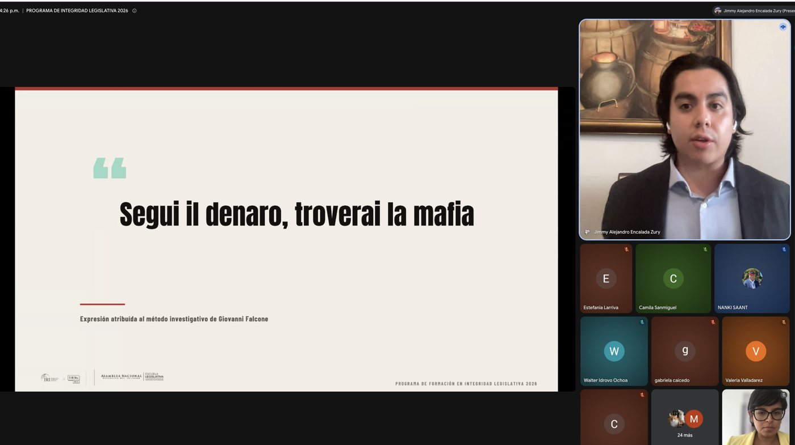
Laboratorio virtual · Jimmy EncaladaCierre · la Guía impresa
El debate en la sala
Cuando la teoría tocó la Ley Antimafias
La pregunta de una asambleísta
¿Por qué una ley que se presenta como integral se reduce a aumentar penas?
La respuesta del especialista
El caso del combustible: se castiga al transportista mientras la estructura comercial sigue intacta, por eso hay que regular y rastrear activos
La preocupación
La infiltración en la Policía exige una política estructural que una justicia, seguridad y condiciones de quienes están abajo
La conclusión compartida
Ante un fenómeno multicausal hace falta una visión integral que las leyes aisladas no dan
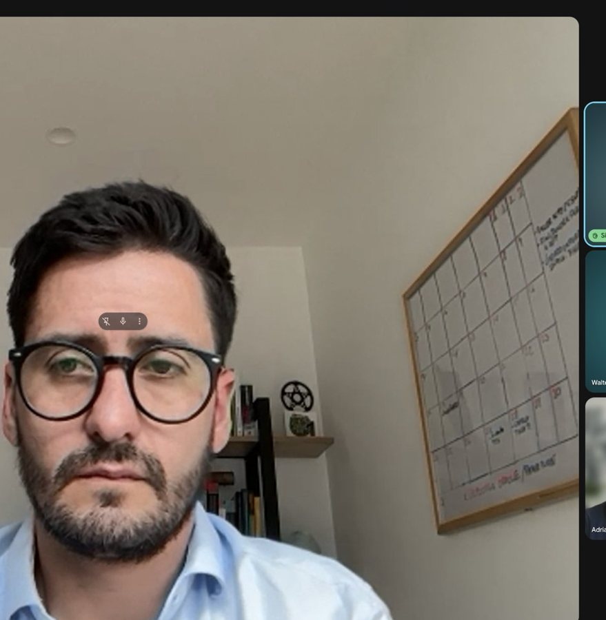
Sesión virtual del 28 de agosto · participaron, entre otros, Adrián Castro, Silvia Núñez, Ana Herrera, Jimmy Erazo y Nanki Saant
Lo que nos dijeron
Ellos mismos lo vieron
“
«Subir penas es un esquema caduco, la ley tiene que mirar la cadena de valor, la dolarización y el territorio»
Sofía Salamea · asambleísta, en el debate sobre la Ley Antimafias
“
«Leyes tenemos, lo que nos faltan son los mecanismos para hacerlas cumplir»
Silvia Núñez · asambleísta, sesión del 28 de agosto
“
«¿Cambiar al personal de arriba reduce la corrupción?»
Walter Idrovo Ochoa · durante las preguntas (la respuesta: solo si se atienden las causas)
Síntesis de intervenciones registradas en las sesiones del programa
02 · Aplicar · la Matriz de Jimmy Encalada
Cinco preguntas a cualquier ley
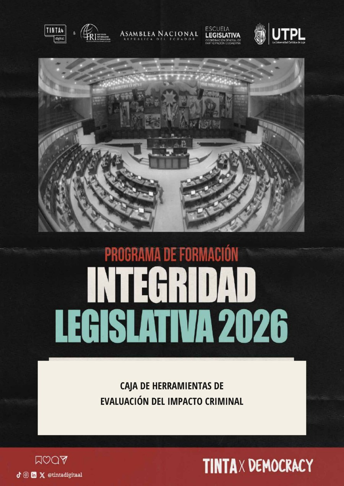
Qué es
La Matriz de Evaluación del Impacto Criminal, creada en el programa para revisar una ley, reforma o proyecto contra el crimen organizado
Para qué sirve
Para distinguir entre lo que la norma dice y lo que realmente puede aplicarse, con evidencia de cada artículo
Criterio
Pregunta central
1. Ecosistema criminal
¿Interviene la red completa o solo a sus ejecutores?
2. Capacidad institucional
¿Quién actúa, con qué competencias y cómo se coordina?
3. Trazabilidad financiera
¿Permite seguir el dinero y al beneficiario final?
4. Afectación económica
¿Altera los costos y ganancias del negocio criminal?
5. Legitimidad y adaptación
¿Evita abusos, se evalúa y aprende de sus resultados?
Matriz de Evaluación del Impacto Criminal (MIC) y su Caja de Herramientas · Programa de Formación en Integridad Legislativa 2026
Cómo se asigna el puntaje
Dos notas por criterio: lo que dice y lo que se aplica
A · Diseño normativo · de 0 a 3
Lo que la ley dice
0
La materia está ausente o la regulación es contradictoria
1–2
Existe regulación, pero es parcial, ambigua o fragmentada
3
Las reglas son claras, coherentes y compatibles con otras normas
+
B · Implementación o «reglas en uso» · de 0 a 3
Lo que de verdad se aplica
0
No existen mecanismos, capacidades ni evidencia de aplicación
1–2
Existen mecanismos parciales o aplicación irregular
3
Existen responsables, procedimientos, recursos, coordinación y evidencia verificable de aplicación
Hasta 6 por criterio × 5 criterios =30
Se puntúa solo después de ubicar el artículo, la disposición o la evidencia que lo sustenta
Cómo se interpreta el total
Cuatro lecturas sobre 30 puntos
0–7
Ley principalmente declarativa
capacidad muy limitada para combatir el crimen organizado transnacional
8–18
Respuesta fragmentaria
interviene algunos componentes, pero mantiene vacíos importantes
19–25
Marco potencialmente funcional
condicionado por capacidades, coordinación y aplicación efectiva
26–30
Marco integral, operativo y adaptable
con capacidad significativa para reducir la actuación criminal
El puntaje no es el final: sirve para localizar los vacíos y saber si el problema está en el diseño, en la implementación o en ambos
Valoración global de la Matriz de Evaluación del Impacto Criminal
02 · Aplicar · el caso del laboratorio
Ejemplo
Lo que encontraron los asesores en la ley de Slytherin
Un país ficticio con 94 homicidios por cada 100.000 habitantes, una «Ley Nacional contra el Crimen Organizado» de 30 artículos, y grupos de trabajo de la Asamblea evaluándola.
Criterio
El vacío que identificaron
1. Ecosistema criminal
Define la organización criminal, pero es ambigua con facilitadores e intermediarios.
2. Capacidad institucional
Crea un sistema nacional y equipos conjuntos, sin presupuesto ni forma de resolver choques de competencias.
3. Trazabilidad financiera
Crea una base nacional de información sin interoperabilidad entre la unidad financiera, tributos y aduanas.
4. Afectación económica
Prioriza la cárcel y no prevé extinción de dominio ni decomiso sin condena
5. Legitimidad
Permite operaciones urgentes con notificación al juez hasta cinco días después.
12030
12 de 30 · respuesta fragmentaria: bien escrita en el papel e inaplicable en la práctica
Promedio de los grupos de trabajo · Informe final del programa
La pregunta para ustedes
¿Cómo podrían utilizar ustedes esta matriz para evaluar una propuesta de ley?
Vamos a probarlo con cinco preguntas, una por cada criterio
Cada respuesta habla de la nota B, la implementación de 0 a 3, la que mejor se ve desde el territorio que ustedes conocen
Ahora ustedes · tarjetas arriba
Una tarjeta verde y una roja para responder
✓
Verde · Sí
Levanten la tarjeta verde si su respuesta es sí
✕
Roja · No
Levanten la tarjeta roja si su respuesta es no
Cómo participar
Leemos una pregunta, cada persona levanta una tarjeta y miramos juntos cómo respondió la sala
Después revelamos qué criterio de la matriz está detrás de la pregunta y qué aporta su mirada a ese puntaje
Cinco preguntas · unos 10 minutos
Tarjetas arriba · pregunta 1 de 5
¿Saben quiénes financian, transportan y protegen el negocio ilícito que más golpea a su comunidad?
✓ Verde · Sí
✕ Roja · No
Criterio 1 de la Matriz · Ecosistema criminal
Ese conocimiento es el primer criterio de la matriz, que mide si una ley alcanza a toda la red o solo al último eslabón. Si levantaron la verde, ustedes ya tienen el mapa con el que se califica una ley, y si levantaron la roja, la matriz les dice qué preguntar para construirlo.
Tarjetas arriba · pregunta 2 de 5
¿Han visto una ley que le encarga una tarea a una institución que en su territorio no tiene gente ni presupuesto para cumplirla?
✓ Verde · Sí
✕ Roja · No
Criterio 2 de la Matriz · Capacidad institucional
La matriz califica cada criterio dos veces, primero cómo está escrita la ley y después si se puede aplicar en el mundo real. Esa segunda mitad se mide mejor desde donde ustedes trabajan, porque ahí se ve si la institución existe, actúa y se coordina con las demás.
Tarjetas arriba · pregunta 3 de 5
¿Alguna vez su organización o su medio siguió el rastro del dinero de un negocio ilícito?
✓ Verde · Sí
✕ Roja · No
Criterio 3 de la Matriz · Trazabilidad financiera
Jimmy Encalada lo resumió en el programa: si se puede perseguir el dinero, se puede perseguir la estructura. El tercer criterio pregunta si la ley facilita esa información, y quien ya cruzó contratos, registros o bases públicas sabe exactamente dónde se corta el rastro.
Tarjetas arriba · pregunta 4 de 5
¿Conocen algún caso en el que hubo condena y el negocio siguió funcionando igual?
✓ Verde · Sí
✕ Roja · No
Criterio 4 de la Matriz · Afectación económica
El cuarto criterio mide si la ley golpea la ganancia del crimen con decomiso, incentivos y sanciones. Cada caso que ustedes documentan de un negocio que sobrevivió a la condena es evidencia de que ese criterio no se está cumpliendo en la práctica.
Tarjetas arriba · pregunta 5 de 5
¿Su organización ha podido saber si una ley contra el crimen se revisó después de aprobada para ver si funcionó?
✓ Verde · Sí
✕ Roja · No
Criterio 5 de la Matriz · Legitimidad y adaptación
El quinto criterio mira los controles y la capacidad de una ley para corregirse, y ahí el seguimiento de la sociedad civil y del periodismo es la pieza que casi siempre falta. Las cinco preguntas que respondieron son los cinco criterios de la matriz, y antes de cerrar les dejamos el código del asistente interactivo para que califiquen con ella una ley que les preocupe.
Y aquí entran ustedes
Ustedes ven lo que los políticos no ven
La matriz se hizo para legisladores, y en manos de la sociedad civil se convierte en una forma de exigir con evidencia
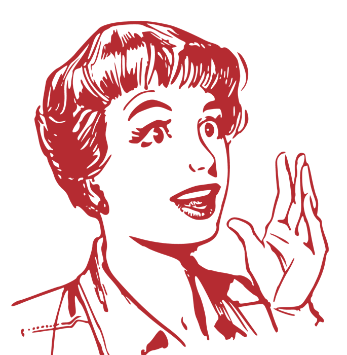
Dos direcciones
De la calle al Congreso y del Congreso a la calle
Llevar la voz
Hacia quienes legislan
Lo que la gente percibe y vive en su territorio
Datos y casos que el Congreso no mira
Las aristas que nadie puso sobre la mesa
→←
Exigir cuentas
Hacia la ciudadanía
Preguntar lo que la ley no responde
Cuestionar con la evidencia en la mano
Traducir una ley para que la gente la entienda
Para hacerlo no empiezan de cero
Las herramientas con las que nos quedamos
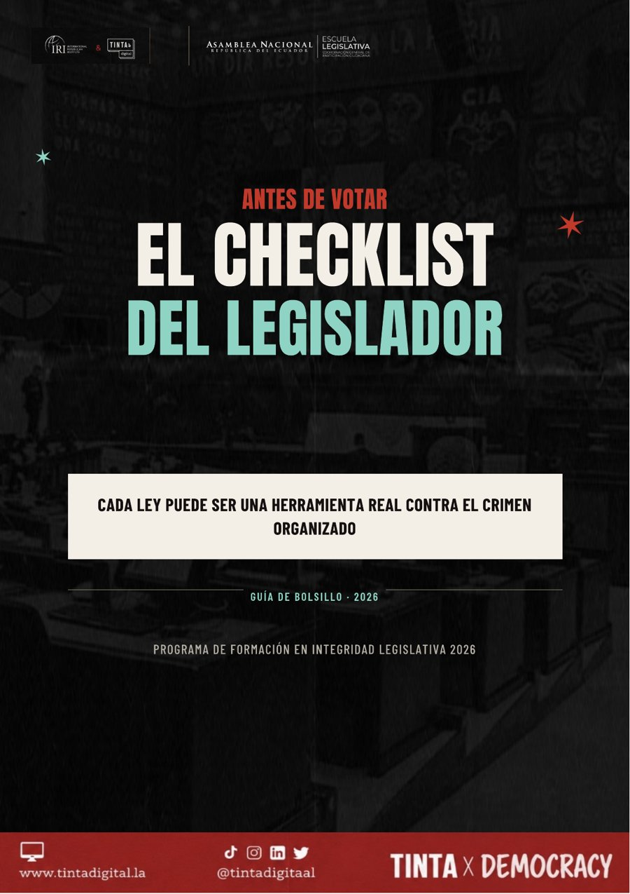
Checklist del Legislador
para revisar una ley antes de votarla
Caja de Herramientas y Matriz
para evaluar paso a paso si una ley se puede aplicar
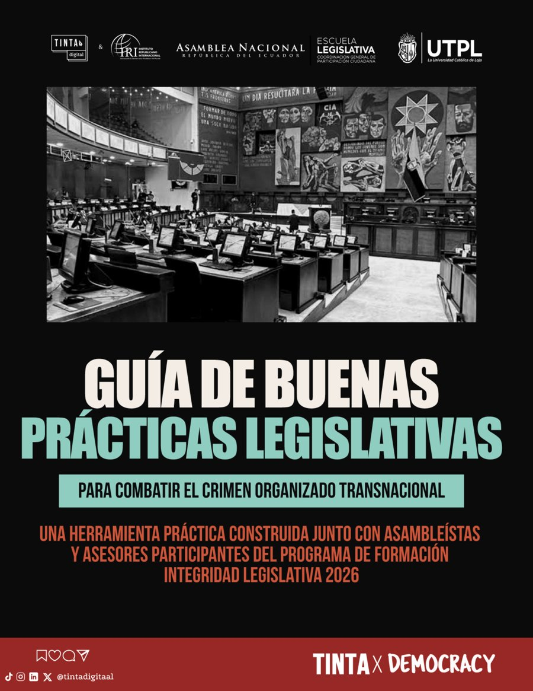
Guía de Buenas Prácticas
para legislar mejor contra el crimen
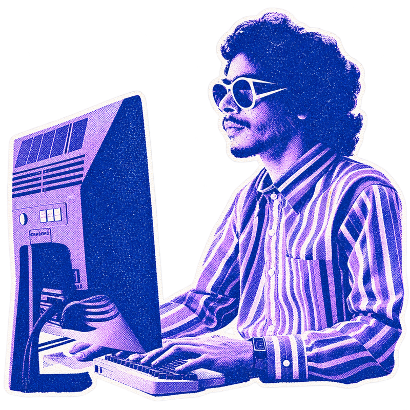
Asistente interactivo
para consultarlas paso a paso
La herramienta para el momento de votar
Nueve preguntas antes de votar una ley
Mirada económica
¿Esta ley facilita rastrear el dinero, o lo dificulta?
Mirada social
¿Previene el problema, o solo lo castiga después de que ocurrió?
Mirada internacional
¿Cubre todo el proceso, o deja alguna etapa sin regular?
Su última página pregunta: «¿Qué agregarías tú a este checklist?»
Checklist del Legislador · guía de bolsillo · basada en el Índice Global de Crimen Organizado (GI-TOC) y las recomendaciones del GAFI
03 · Construir · la Guía que escribieron ellos
Seis pasos antes de legislar contra el crimen
1
Identificar la brecha
¿Falla la ley o falta presupuesto y capacidad?
4
Definir la medida
¿Reforma, protocolo o sistema de información?
2
Mapear la red completa
Financistas, testaferros, facilitadores y víctimas
5
Asignar responsables
Quién lidera, con qué recursos y en qué plazo
3
Contrastar con Palermo y GAFI
Que no queden vacíos frente a las obligaciones del país
6
Verificar y adaptar
¿Se redujo de verdad la capacidad criminal?
Construida por los participantes el 4 de septiembre · entregada a la presidenta de la Comisión de Seguridad
Llévenselo todo
Todo lo que construimos es suyo, escaneen y llévenselo